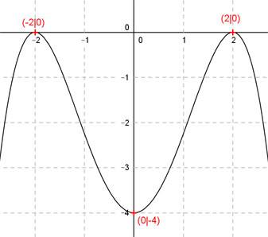

Aufgabe 83 Der Graph einer achsensymmetrischen ganzrationalen Funktion 4. Grades hat in (0|-4) einen Tiefpunkt und berührt die x-Achse bei 2 und -2. Wie lautet seine Funktionsgleichung?  Allgemeine Form einer achsensymmetrischen ganzrationalen Funktion 4. Grades: f(x) = ax4 + cx2 + e f’(x) = 4ax3 + 2cx f’’(x) = 12ax2 + 2c 4 Bedingungen: (eine mehr als nötig, wegen der Symmetrie sind die Berührpunkte gleichwertig) 1. Hat im Punkt (0|-4) einen Tiefpunkt bedeutet zum einen: f(0) = -4 --> a * 04 + c * 02 + e = - 4 --> e = -4 2. Hat im Punkt (0|-4) einen Tiefpunkt bedeutet zum anderen: f’(0) = 0 --> 4a * 03 + 2c * 0 = 0 liefert kein Ergebnis 3. Berührt die x-Achse bei (2|0) bedeutet zum einen: f(2) = 0 --> a * 24 + c * 22 - 4 = 0 --> 16a + 4c - 4 = 0 I 4. Berührt die x-Achse bei (2|0) bedeutet zum anderen: f’(2) = 0 --> 4a * 23 + 2c * 2 = 0 --> 32a + 4c = 0 II I * (-2) + II -32a - 8c + 8 = 0 32a + 4c = 0 ------------------- -4c + 8 = 0 |-8 -4c = -8 |:(-4) c = 2 c = 2 in II eingesetzt: 32a + 4 * 2 = 0 32a + 8 = 0 |-8 32a = -8 |:32 a = -8/32 = -1/4 = -0,25 Gesuchte Funktionsgleichung: f(x) = -0,25x4 + 2x2 - 4